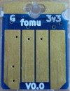
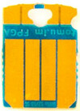
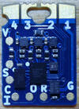
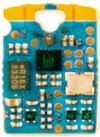
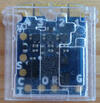
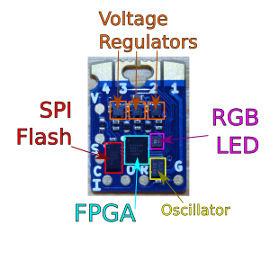
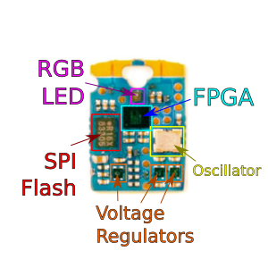

Required Hardware¶
For this workshop, you will need a Fomu board.
Aside from that, you need a computer with a USB port that can run the Required Software.
Note
You should not need any special drivers, though on Linux you may need sudo
access, or special udev rules for granting permission to use the USB device from a
non-privileged account.
Attention
This workshop may be competed with any model of Fomu, though there are some parts that require you to identify which model you have. See the Which Fomu do I have? below.
Which Fomu do I have?¶
Hacker |
Production |
|
|---|---|---|
String |
hacker |
pvt |
Bash Command |
|
|
Front |
 |
 |
Back |
 |
 |
In Case |
 |
|
Parts |
 |
 |
Color |
dark blue |
cyan / light blue |
Bootloader |
Fomu Hacker running DFU Bootloader vX.X.X |
Fomu PVT running DFU Bootloader vX.X.X |
Description |
These are the original design and cut corners to make it easier to manufacture. If you received one directly from Tim before 36C3, you probably have one of these. Hacker boards have white silkscreen on the back. |
If you ordered a Fomu from Crowd Supply, this is the model you’ll receive. It is small, and fits in a USB port. There is no silkscreen on it. This model of Fomu has a large silver crystal oscillator that is the tallest component on the board. |
Schematic |
||
Received at |
From Tim at 35C3, CCCamp19, HackADay Supercon 2019 |
At RISC-V Summit 2019, 36C3, Crowdsupply, Mouser |
Buy more |
End of Life |

Note
There are also Fomu EVT boards which were shipped to early backers of the Fomu crowd funding campaign. This model of Fomu is about the size of a credit card. It should have the text “Fomu EVT3” written across it in white silkscreen. If you have a different EVT board such as EVT2 or EVT1, they should also work.